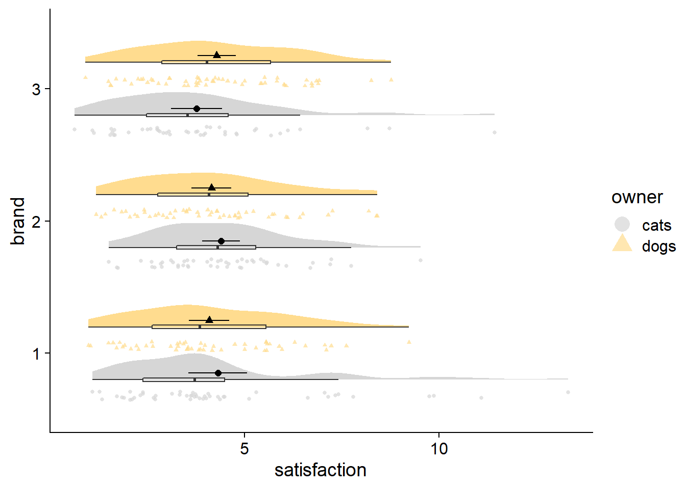
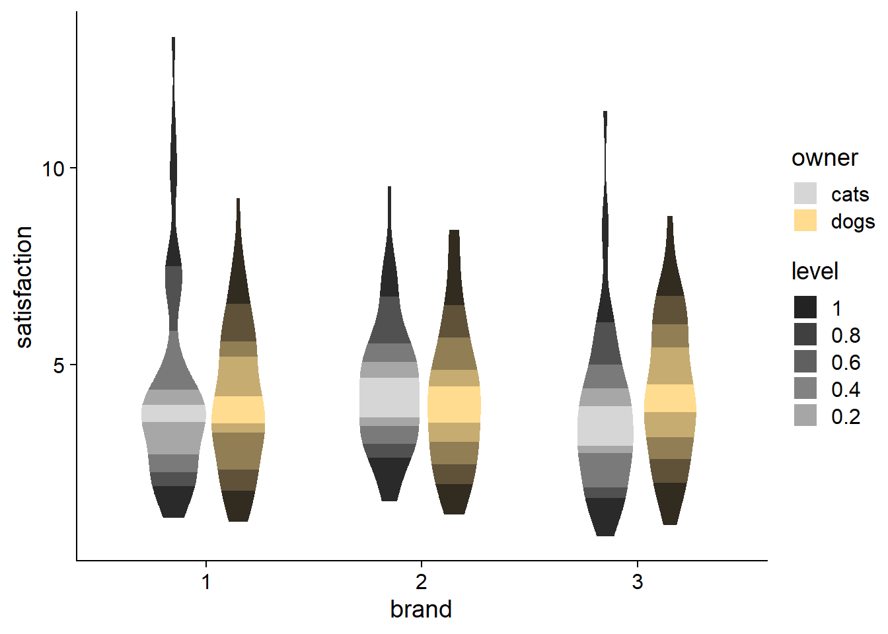
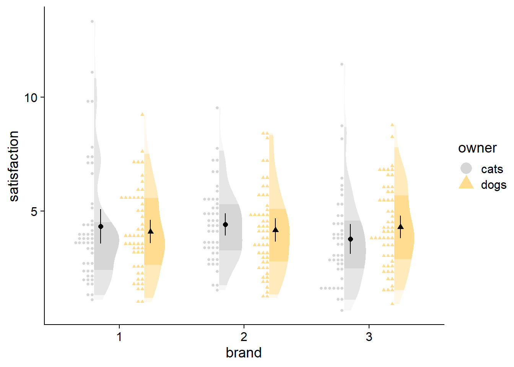
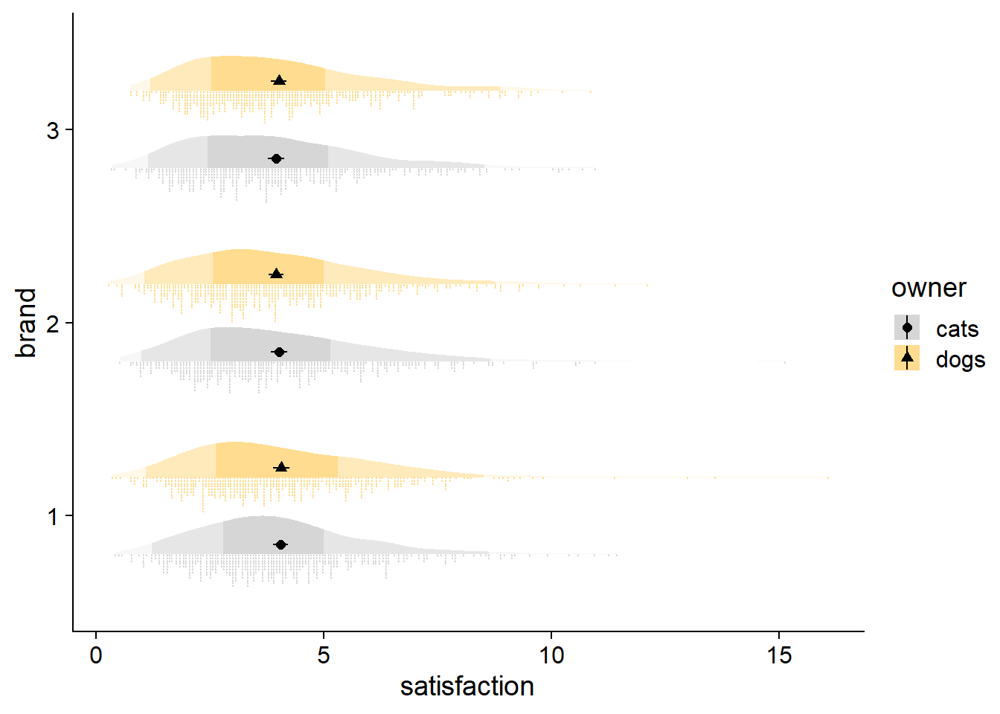
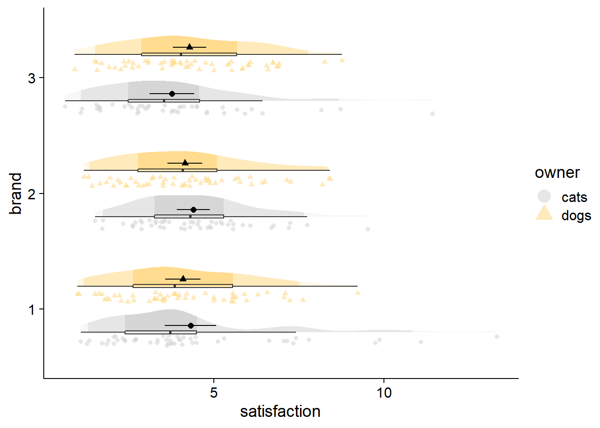
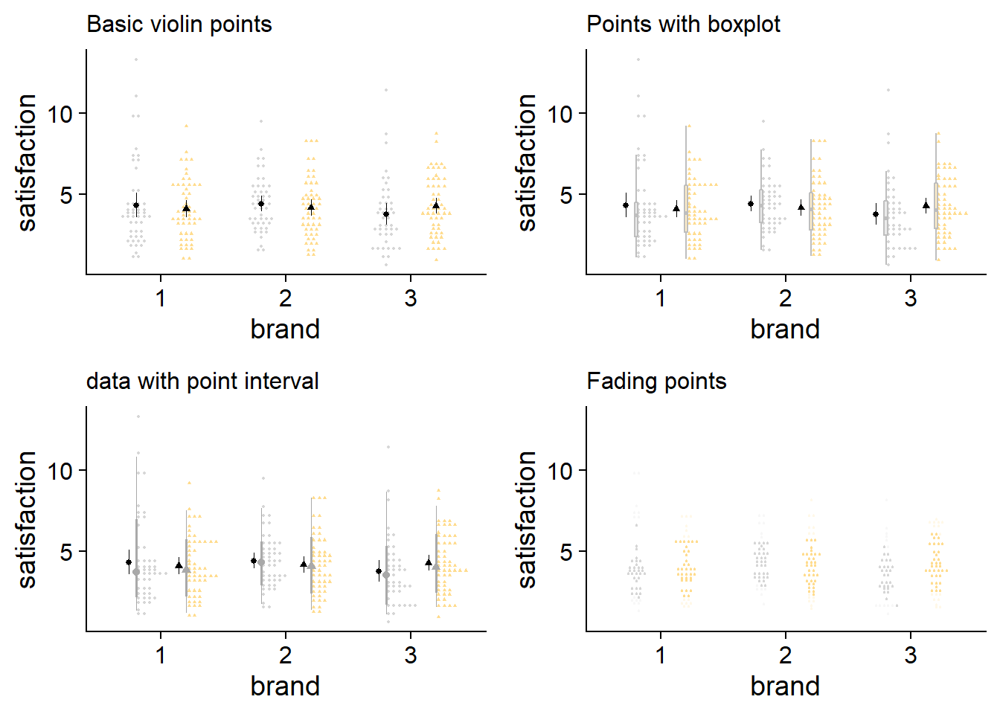
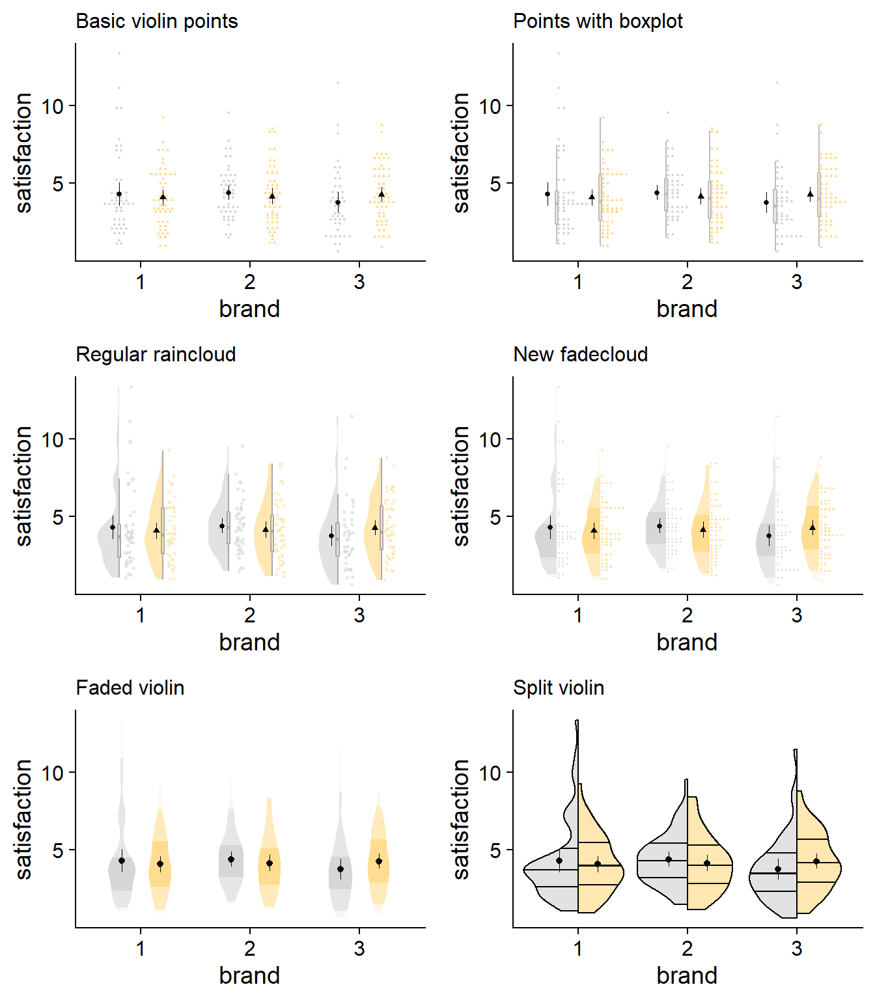
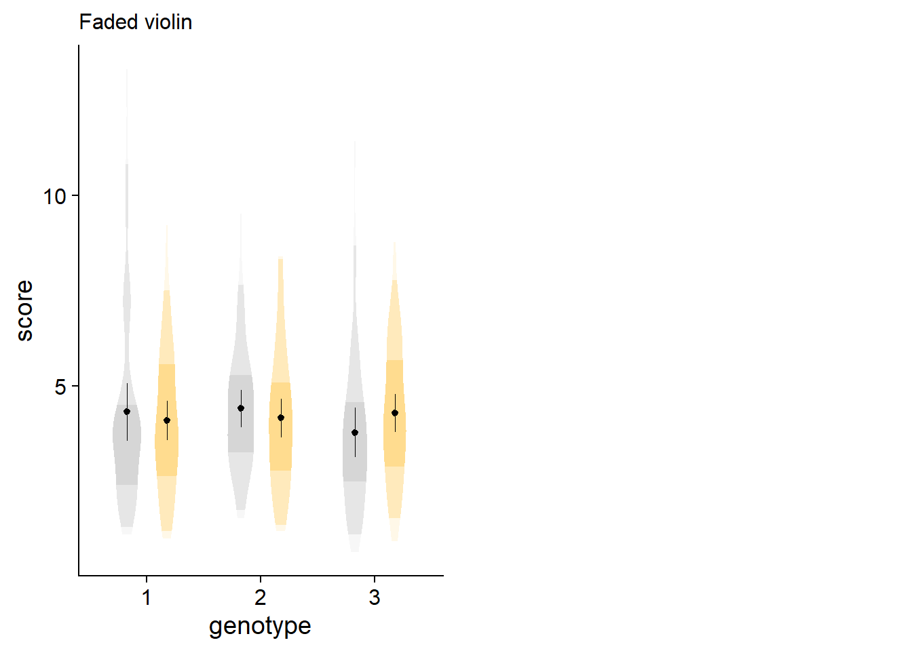

One major challenge in data visualization is making plots that are both transparent and simple. Raincloud plots are a recent addition to the collective data science toolbox, allowing for raw data, density distributions, and boxplots to be presented simultaneously. Here, we’ll explore a modification, the fadecloud (or maybe rampcloud, boxcloud, intervalcloud, quantcloud, rangecloud) that seeks to substitute boxplots by shading in the density distribution.

At the end of the day, raincloud plots are not a simple way to vizualize data. I think bar plots have been so ubiquitous because there is some hard-wired intuition in us that understands “more bar is more number.”
I’ve tried using raincloud plots, but I often need to add extra geoms like the mean and confidence intervals. By the end, there is more visual clutter than I’d like. I find that in a raincloud plot, a density distribution and boxplot overlap in capturing the variable’s locality, spread, and skewness. The major difference is that boxplots visualize discrete values and cutoffs, whereas the density distribution provides a more holistic picture of the data. Combining the boxplot and density objects might help improve the plot’s efficiency, by coloring the density curve according to important quantiles.
Load packages…
library(tidyverse)
library(ggdist) # for shadeable density slabs
# library(ggbeeswarm)
library(gghalves) # for half-half geoms
library(ggpp) # for position_dodge2nudge
library(cowplot) # for publication-ready themes
library(colorspace) # for lightening color palettes
library(gridExtra) # for grid.arrangeCreate data…
set.seed(1234)
df <- data.frame(score = rgamma(300, 4, 1),
owner = sample(c("dogs", "cats"), 300, replace = TRUE),
genotype = factor(sample(1:3, 300, replace = TRUE)))Set ggplot canvas and styling…
# Setting colorblind-friendly palette
cbPalette <-c("#999999","#E69F00", "#56B4E9","#009E73",
"#F0E442", "#0072B2", "#D55E00","#CC79A7")
cbPalette <- lighten(cbPalette, amount = 0.6, space = "HLS",)
cbPalette1 <-c("#999999","#E69F00", "#56B4E9","#009E73",
"#F0E442", "#0072B2", "#D55E00","#CC79A7")
# ggplot canvas
cloudplot <- ggplot(data = df,
aes(y = score, x = genotype, shape = owner, fill = owner)) +
theme_half_open() +
scale_colour_manual(values = cbPalette, aesthetics = c("colour","fill")) +
guides(fill_ramp = "none",color = guide_legend(override.aes = list(size = 5))) Right now, the easiest way to include shading into a density distribution is through the ggdist package. In my eyes, ggdist is a dark horse in the data science ecosystem. It doesn’t get a lot of attention in your average forum or blog, but it has loads of functionality for visualizing distributions and uncertainty.
The fading is accomplished through the fill_ramp aesthetic, in combination with the .width attribute, which specifies the quantiles you want to shade. I personally like the c(.50, .95, 1) setting, which gives an intuitive picture of the inner- and outer- halves, while showing outliers beyond the 95th percentile, but you can change the quantiles to suit your needs. The shading defaults to white, but you can also modify it to ramp towards other colors.
ggplot(data = df, aes(y = score, x = genotype)) +
# density distribution slab
stat_slab(side = "both", show.legend = T,
scale = 0.6, # defines the height that a slab can reach
position = position_dodge(width=.6), # distance between elements for dodging
aes(fill_ramp = stat(level),fill=owner),
.width = c(.20, .40,.60,.80,1)) + # set quantiles for shading
# styling
scale_fill_ramp_discrete(from='black', aesthetics = "fill_ramp")+ # set ramping color
guides( # change name and display of legend elements
color="none") + # suppresses color legend item)
scale_colour_manual(values = cbPalette, aesthetics = c("colour","fill"))+
theme_half_open()
Despite the questionable coloring, you can see how fill_ramp can also be used for violin plots. So when you want a more streamlined, aggregated plot, you have another option beyond just choosing either a violin plot or a boxplot.
An alternative to jittering your raw data is the ggdist::stat_dots element. To address overplotting, stat_dots opts for stacking and resizing points. The resulting raw data looks more “drippy” than “rainy,” but I think the stacking ultimately makes the raw data more useful when trying to identify over/under-populated bins (e.g., many respondents answering at the min, median, or max points of a self-report scale). In addition, the stacking has a crisp look that I find very satisfying.
fadecloud <- cloudplot +
stat_slab(side = "right", scale = 0.4,show.legend = F,
position = position_dodge(width = .8),
aes(fill_ramp = stat(level)),.width = c(.50, .95,1)) +
# dots
stat_dots(side = "left",scale = 0.4,show.legend = T,
position = position_dodge(width = .8),aes(color = owner)) +
# dot-whisker for means
stat_summary(fun.data = "mean_cl_normal",show.legend = FALSE,size = .4,
position = position_dodge2nudge(x=.05,width = .8))
stat_dots can be used with large samples as well. You can adjust the quantiles argument to change the granularity of the points; size of points change automatically. Generally, more quantiles will give your raw data more and smaller bins, looking more like a histogram. Fewer quantiles will look like a dotty reflection of your density curve.
df2 <- data.frame(score = rgamma(3000, 4, 1),
owner = sample(c("dogs", "cats"), 3000, replace = TRUE),
genotype = factor(sample(1:3, 3000, replace = TRUE)))
ggplot(data = df2,
aes(y = score,x = genotype,fill = owner)) +
# density slab
stat_slab(side = "right", scale = 0.4,
position = position_dodge(width = .8),
aes(fill_ramp = stat(level)),.width = c(.50, .95,1)) +
# dots
stat_dots(side = "left",scale = 0.4, show.legend = T,
position = position_dodge(width = .8),aes(color = owner)) +
# dot-whisker for means
stat_summary(fun.data = "mean_cl_normal",show.legend = T,size = .4,aes(shape=owner),
position = position_dodge2nudge(x=.05,width = .8)) +
# styling
scale_colour_manual(values = cbPalette, aesthetics = c("colour","fill"))+
guides(fill_ramp = "none") +
theme_half_open() +
coord_flip()
And then there is the typical raincloud, featured at the beginning of this post, with ‘rainy’ dots being drawn with gghalves::geom_half_point, coupled with a boxplot for flavor. Note how the boxes and 50% region are consistent, but the whiskers and 95% shading do not always line up, reflecting different thresholds for identifying outliers. Whereas quantiles are at fixed percentiles, boxplots compute whisker length as Q1 - 1.5*IQR and Q3 + 1.5*IQR (Inter Quartile Ranges).
raincloud <- cloudplot +
# density slab
stat_slab(side = "right", scale = 0.4,show.legend = F,
position = position_dodge(width = .8),
aes(fill_ramp = stat(level)),.width = c(.50, .95,1)) +
# dots
gghalves::geom_half_point(aes(color = owner),
position = position_dodge2nudge(),
side = "l", range_scale = .5,
alpha = .6, size = 1.5) +
# boxplot
geom_boxplot(width = .05,alpha = .5,outlier.alpha=0,
position = position_dodge(width = .8),show.legend = FALSE) +
# dot-whisker for means
stat_summary(fun.data = "mean_cl_normal",show.legend = FALSE,size = .4,
position = position_dodge2nudge(x=.06,width = .8)) +
coord_flip()
Other features like a median are also easy enough to add with point geoms. A nicer option though would be to put a single line through the distribution at the median.
Hopefully some day we can get the option to have fadeclouds mirror each other, like in split violin plots and some of the new options in raincloudplots. In addition to helping to emphasize groups at the same axis level, it might save some space in the event of extremely high density peaks, allowing peaks to face away from each other.
Hopefully many packages, including ggdist and gghalves, will eventually be compatible with ggpp::position_dodge2nudge, which allows simultaneous dodging and nudging. For something like a raincloud plot, trying to jostle around multiple geoms that can vary greatly in their width requires an extra bit of control. For instance, a nudge option could help to separate the dots from the density plot, increasing the legibility of each. ggdist does have a position_dodgejust function that tries to preserve the unique location of each element, I haven’t used it much, but regular dodging and nudging tends to come easier to me.
One appealing method is to just use raw data. As mentioned earlier, with a smaller number of quantiles (“bins” for a range of values), stacked points start to look like a density distribution anyway.
vipo <- cloudplot +
# dots
stat_dots(side = "both",scale = 0.6,show.legend = T,dotsize = 1.5,
position = position_dodge(width = .8),aes(color = owner)) +
# dot-whisker for means
stat_summary(fun.data = "mean_cl_normal",show.legend = FALSE,size = .2,
position = position_dodge2nudge(width = .8))+
theme(legend.position = "none") + labs(subtitle = "Basic violin points")
vipo_box <- cloudplot +
# dots
stat_dots(scale = 0.6,show.legend = T,dotsize = 1.5,
position = position_dodge(width = .8),aes(color = owner)) +
#boxplot
geom_boxplot(width = .05,alpha = .5,outlier.alpha=0, color = "grey",
position = position_dodge(width = .8),show.legend = FALSE) +
# dot-whisker for means
stat_summary(fun.data = "mean_cl_normal",show.legend = FALSE,size = .2,
position = position_dodge2nudge(width = .8,x = -.08))+
theme(legend.position = "none")+ labs(subtitle = "Points with boxplot")
vipo_int <- cloudplot +
# dots
stat_dots(scale = 0.6,show.legend = T,dotsize = 1.5,
position = position_dodge(width = .8),aes(color = owner)) +
# ggdist interval
stat_pointinterval(position = position_dodge(width = .8),show.legend = F, color="dark grey",
interval_size_range = c(0.2, .7)) +
# c(2, 20)) +
# dot-whisker for means
stat_summary(fun.data = "mean_cl_normal",show.legend = FALSE,size = .2,
position = position_dodge2nudge(width = .8,x = -.06))+
theme(legend.position = "none") + labs(subtitle = "data with point interval")
vipo_fade <- ggplot(data = df, aes(y = score, x = genotype)) +
stat_dots(side = "both", scale = 0.4, show.legend = T, dotsize = 1.5,
position = position_dodge(width = .8), aes(colour_ramp = stat(level),color = owner, fill_ramp = stat(level),fill = owner)) +
scale_colour_ramp_discrete( from = "white",
range = c(0.7, 1), aesthetics = "clour_ramp") +
# scale_fill_ramp_discrete( from = "white",
# range = c(0.7, 1), aesthetics = "fill_ramp") +
scale_colour_manual(values = cbPalette, aesthetics = c("colour","fill"))+
guides(colour_ramp = "none") +
theme_half_open() +
theme(legend.position = "none")+ labs(subtitle = "Fading points")
These plots are small, but that can be helpful to get a sense of what is makes sense at a glance. Fading out the raw data doesn’t seem to be the way to go. I didn’t expect the stacked raw data with a boxplot to look as good as it does.
Below is a final collection of my favorite plotting designs. Take a look and see what suits your priorities. I’ve been partial to violin points for a while, but have come to appreciate some further information on the distribution. Density plots are nice for really showcasing the peaks and valleys of the whole dataset, in a way that boxplots and raw data do not always do. With larger samples, density plots will tend to lose this unique contribution, and you can probably use more raw data, depending on the bin widths you’re comfortable with. To this end, for small-ish sample sizes, the faded violin plots offer an excellent way to visualize a streamlined distribution. If you’re set on seeing some raw data, I like both the stacked points with a box plot and the fadecloud. The box plot with stacking plot omits some higher-level distributional information, but is ultimately a more simple graphic. Between the two “whole picture” options of the fadecloud and the traditional raincloud, my bias is obvious, having gone through all the work to say the fadecloud is worthwhile. To look at the plots side by side though, my intuition seemed correct; the fadecloud gives a similar amount of information without having to occupy the reader’s attention with another boxplot. Likewise, the stacking of data points does seem to make it easier to identify small-scale concentrations of data.


new_raincloud <- cloudplot +
# density slab
stat_slab(side = "left", scale = 0.4,show.legend = F, alpha = .7,
position = position_dodge(width = .8)) +
# dots
gghalves::geom_half_point(aes(color = owner),
position = position_dodge2nudge(),
side = "r", range_scale = .5,
alpha = .6, size = .5) +
# boxplot
geom_boxplot(width = .05,alpha = .5,outlier.alpha=0, color = "dark grey",
position = position_dodge(width = .8),show.legend = FALSE) +
# dot-whisker for means
stat_summary(fun.data = "mean_cl_normal",show.legend = FALSE,size = .2,
position = position_dodge2nudge(width = .8,x = -.06)) + labs(subtitle = "Regular raincloud")+
theme(legend.position = "none")
new_fadecloud <- cloudplot +
stat_slab(side = "left", scale = 0.4,show.legend = F,
position = position_dodge(width = .8),
aes(fill_ramp = stat(level)),.width = c(.50, .95,1)) +
# dots
stat_dots(scale = 0.6,show.legend = T,dotsize = 1.5,
position = position_dodge(width = .8),aes(color = owner)) +
# dot-whisker for means
stat_summary(fun.data = "mean_cl_normal",show.legend = FALSE,size = .2,
position = position_dodge2nudge(width = .8,x = -.06))+
labs(subtitle = "New fadecloud")+
theme(legend.position = "none")
new_vio <- ggplot(data = df, aes(y = score, x = genotype, group = owner)) +
# density distribution slab
stat_slab(side = "both", show.legend = T,
scale = 0.5, # defines the height that a slab can reach
position = position_dodge(width=.7), # distance between elements for dodging
aes(fill_ramp = stat(level),fill=owner),
.width = c(.5, .95, 1)) + # set quantiles for shading
stat_summary(fun.data = "mean_cl_normal",show.legend = FALSE,size = .2,
position = position_dodge2nudge(width = .7))+
# styling
scale_fill_ramp_discrete(from='white', aesthetics = "fill_ramp")+ # set ramping color
guides( # change name and display of legend elements
color="none") + # suppresses color legend item)
scale_colour_manual(values = cbPalette, aesthetics = c("colour","fill"))+
theme_half_open() + guides(fill_ramp = "none") +
labs(subtitle = "Faded violin")+
theme(legend.position = "none")